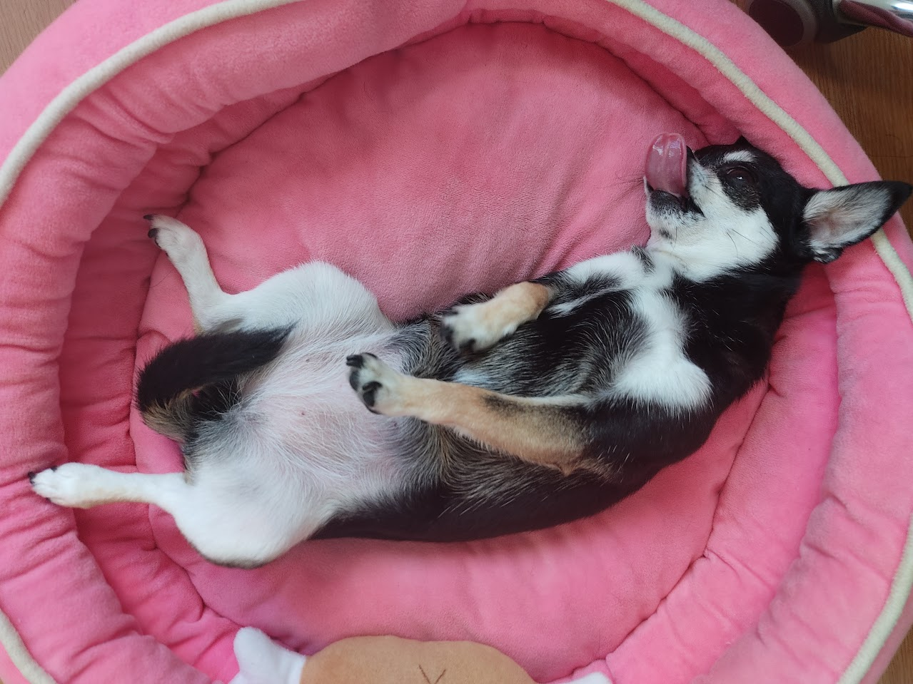

Contato
Deixe um recado
Siga na Nezuko no Instagram

Nezuko Chihuahua
Visite a casinha
Caminha Rosa, Sala de Estar - Algum lugar de Curitiba - PR

Nezuko, uma chihuahua de rara linhagem, emana uma aura de serenidade e graça que parece transcender sua pequena estatura. Seu nome, uma homenagem à personagem icônica da animação japonesa Kimetsu no Yaiba, evoca não apenas sua essência tranquila, mas também a luminosidade que emana de seus olhos, refletindo uma alma gentil e pura.
Contrariando as expectativas associadas à sua raça, Nezuko é uma criatura de temperamento suave e afetuoso. Seus movimentos são delicados, como se dançasse ao ritmo suave da vida, sempre vigilante em proteger e cuidar de seus amados donos. Apesar de sua timidez inerente, seu coração transborda de amor, especialmente quando se entrega às brincadeiras em sua morada, correndo velozmente de um canto a outro para alegria de seus brinquedos coloridos.
Os passeios são outra ocasião em que Nezuko revela sua natureza encantadora, preferindo o conforto do colo de seus humanos enquanto observa o mundo passar com olhos curiosos e ávidos por novas descobertas. Em sua presença, a calma se instala como uma suave brisa, e cada momento se torna uma celebração da beleza e da amizade incondicional que só um fiel companheiro de quatro patas pode oferecer.
Nezuko Chihuahua
Caminha Rosa, Sala de Estar - Algum lugar de Curitiba - PR